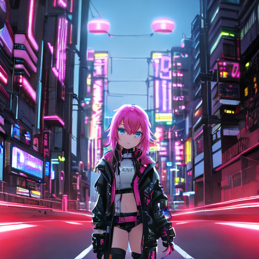
米山舞 LoRA · v5b vs v5c 全版本总验收
触发词 yoneya styleseed=4230 stepscfg 7.5 AnythingV5 底模
目的：768px 训练是否让线稿/笔触米山舞化（量化测不到，只能肉眼）
每张图均可点击放大。横排 = 同 prompt 同 seed 唯一变量是权重
① 内容主导口径 prompt 带场景描述 · lora_scale 0.8 · 与日常使用一致 —— 结论：五版几乎分不出（数据证实你的直觉）
v5b e2
512训·dim32
sample 0.754 甜点
引擎图 0.482
sample 0.754 甜点
引擎图 0.482
v5c e1
768训·dim64
sample 0.701
引擎图 0.476
sample 0.701
引擎图 0.476
v5c e2
768训·dim64
sample 0.681
引擎图 0.455
sample 0.681
引擎图 0.455
v5c e3
768训·dim64
sample 0.767 ↑
引擎图 0.466
sample 0.767 ↑
引擎图 0.466
v5c e4
768训·dim64
sample 0.684
引擎图 0.467
sample 0.684
引擎图 0.467
g1yoneya style, 1girl, cyberpunk city, neon lights, detailed eyes, masterpiece, best quality
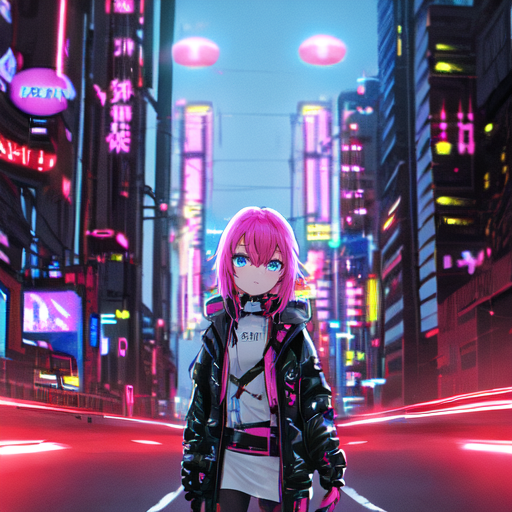
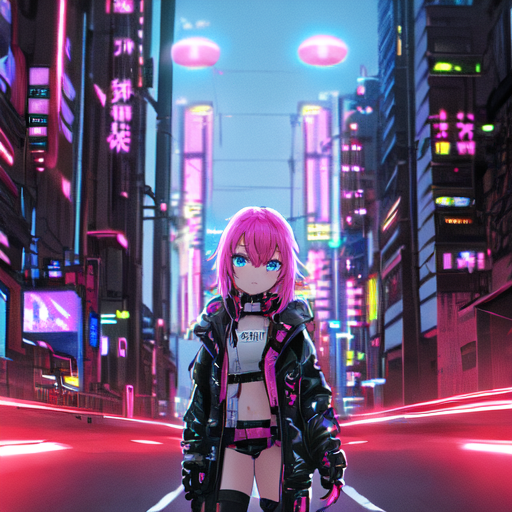
g2yoneya style, 1girl, white dress, standing in flower field, masterpiece, best quality
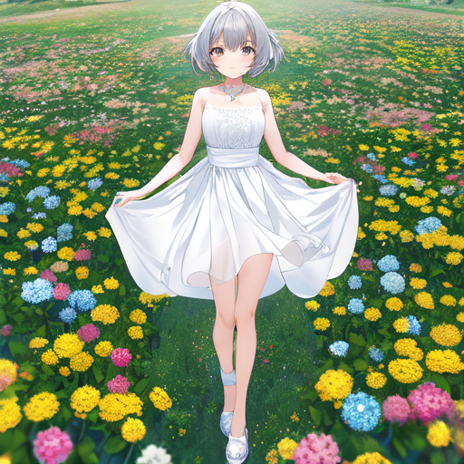
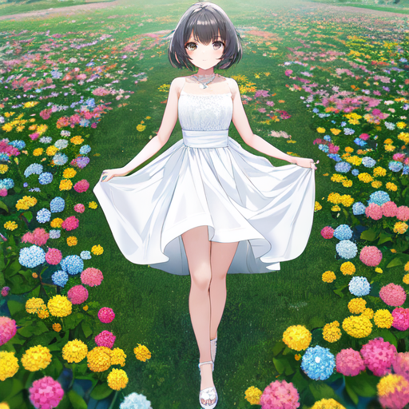
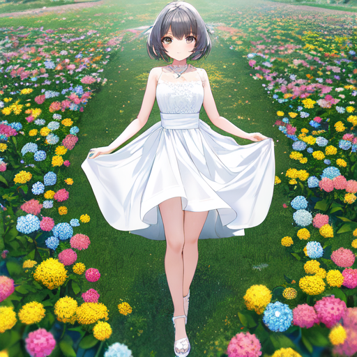
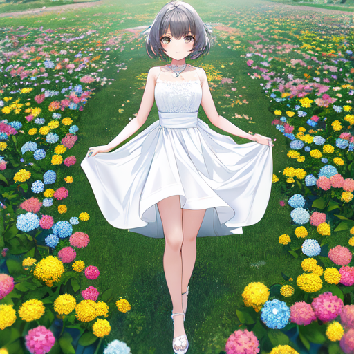
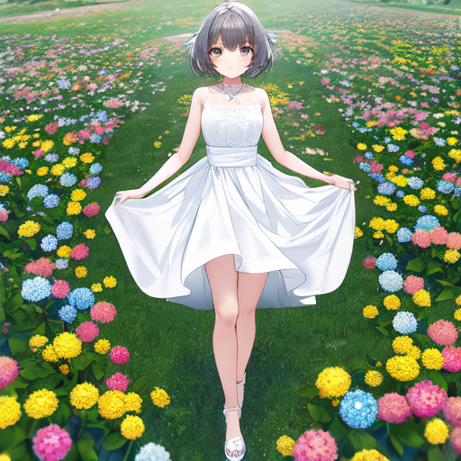
g3yoneya style, 1girl, school uniform, classroom, sunset, looking at viewer, masterpiece, best quality
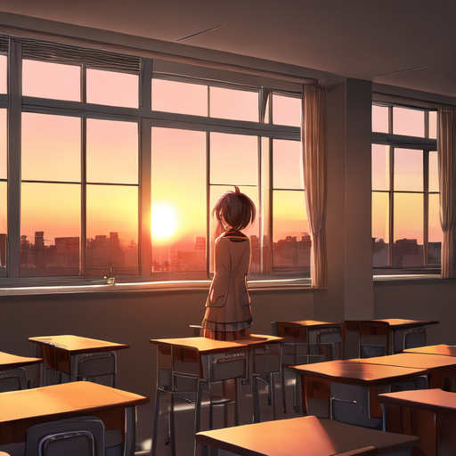
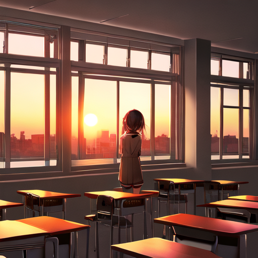
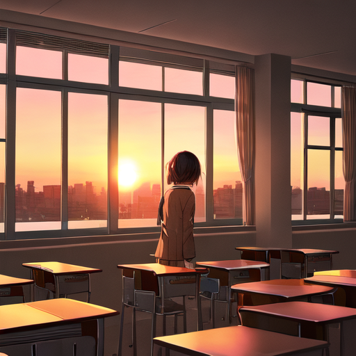
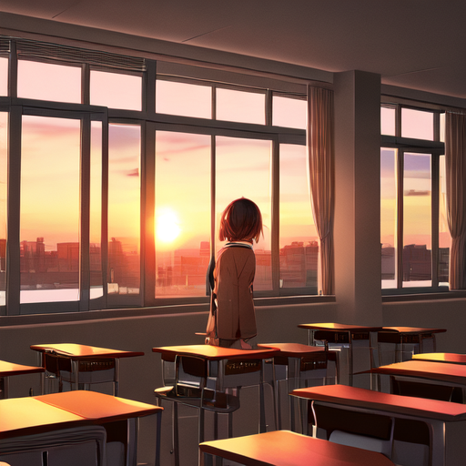
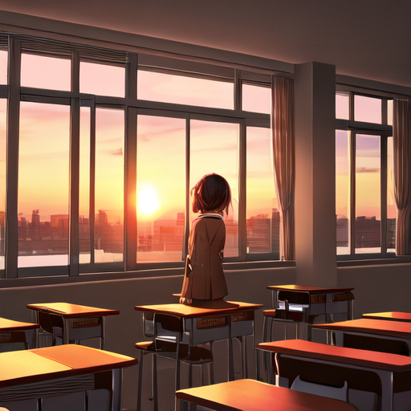
g4yoneya style, 1girl, rainy street at night, umbrella, monochrome atmosphere, masterpiece, best quality
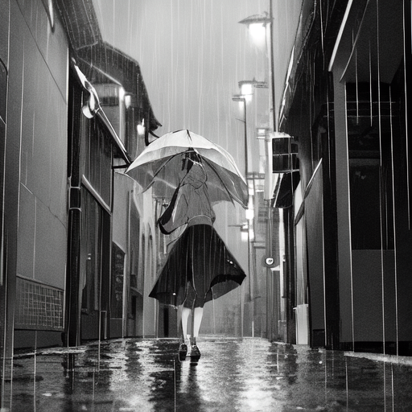
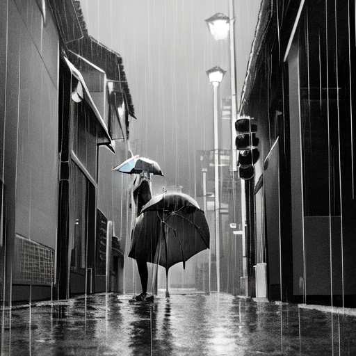
g5 图生图yoneya style, 1girl, masterpiece, best quality · strength 0.6 · 仅 v5b 与 e3 有对照
v5b e2
512训·dim32
v5c e3
768训·dim64
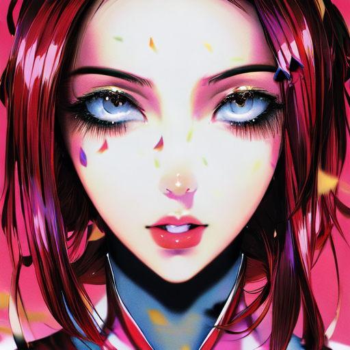
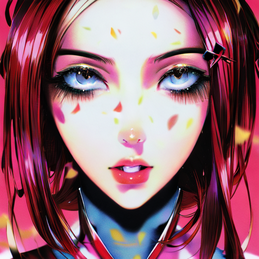
② 风格压力测试 prompt 只留触发词 + 训练高频词 · lora_scale 1.0 满开 —— 风格全开，epoch 差异放大（此组色彩指标失效，纯肉眼判断）
v5c e1
768训·dim64
v5c e2
768训·dim64
v5c e3
768训·dim64 · sample 最高
v5c e4
768训·dim64
s1yoneya style, solo, looking at viewer, masterpiece, best qualitysolo=训练集第一高频词(162次)
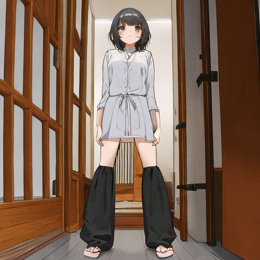
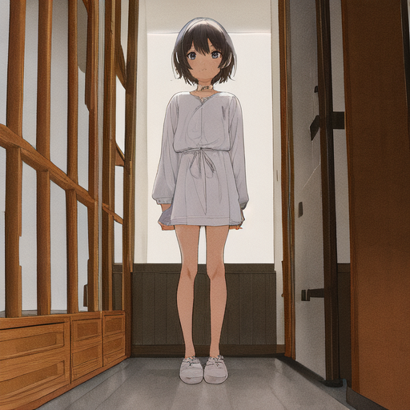

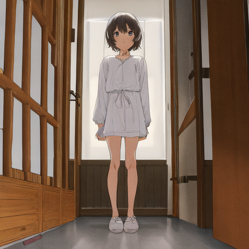
s2yoneya style, 1girl, long hair, portrait, detailed eyes, masterpiece, best quality只留基础人设，不指定场景/服装/配色
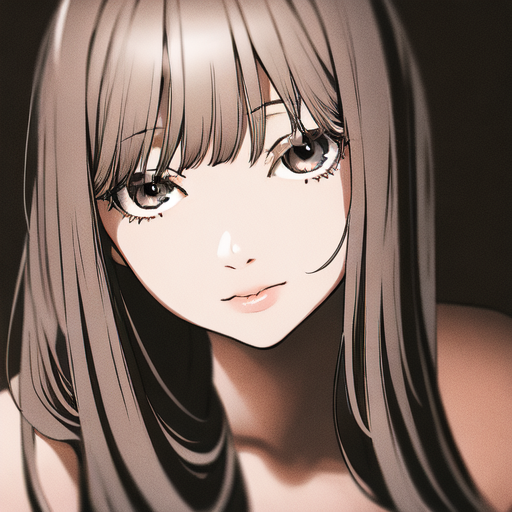
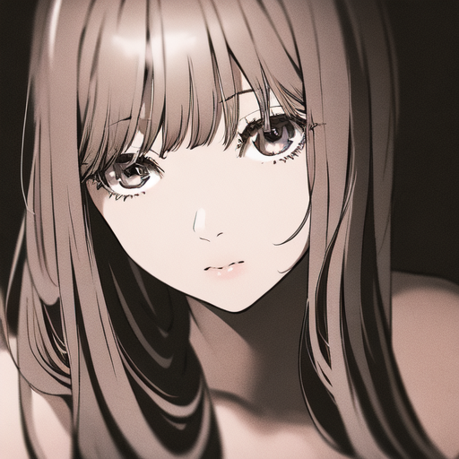
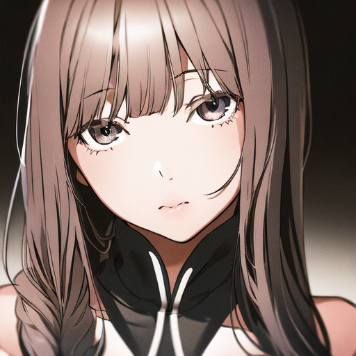
参考：v5b 的 scale 梯度旧图（v5b 当时测过拉高风格旋钮的效果，可对比"风格满开"该长什么样）
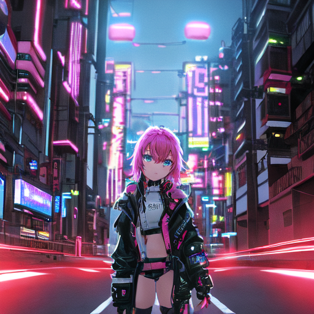
scale 1.0 (hue 0.825)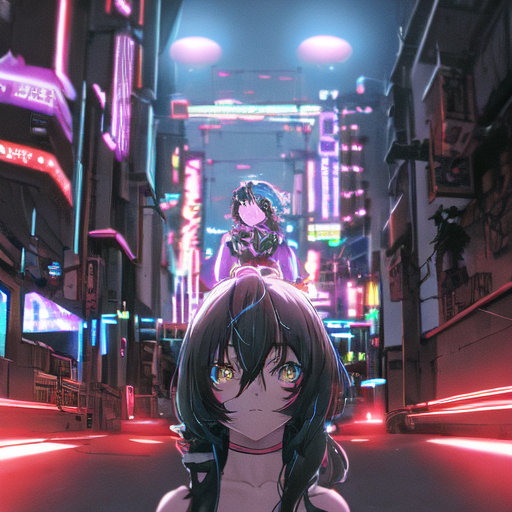
scale 1.2 (hue 0.833)
肉眼验收 checklist（重点自上而下）：
- ① 线稿/笔触（768 的核心赌注）——头发丝、衣褶线条是否干脆有手绘感，还是 AI 软糊？跟 v5b 比有没有"更米山舞"的线条？
- ② 风格压力组 s1/s2——同一个人像构图上，哪个 epoch 的五官/上色最有"米山舞味"？谁最像训练集里那种插画感？
- ③ 色彩——有没有发灰发脏？（风格组 sat 0.21~0.42 偏低是隐患点）暗部、阴影过渡是否干净？
- ④ 崩坏——五官/手部/结构有没有崩？哪版最稳？
- ⑤ 终极一问——挑一张放简历作品集，你会选哪版哪张？